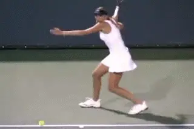
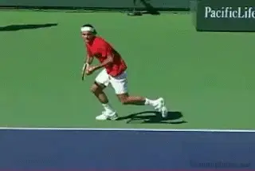
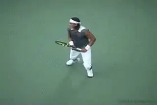
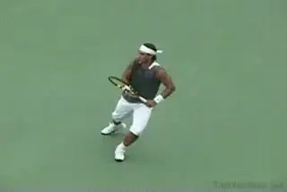
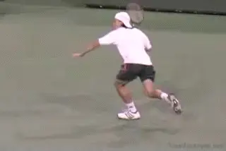
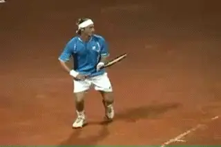
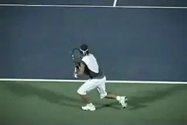
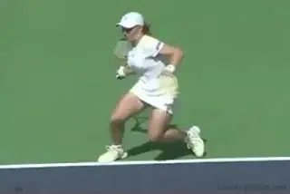
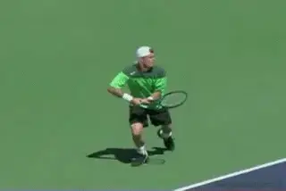
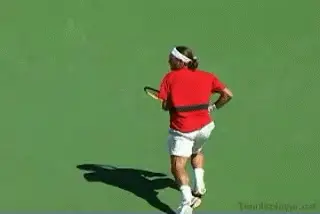

The Athletic Foundation¶
Hitting on the Run¶
Pat Doughert¶

Nicole Vaidisova lunges and transfers her weight in a semi-open stance.
Hitting effortlessly and powerfully on the run is one of the hallmarks of tennis greatness. Slow reactions, sluggish recoveries, and moving with the center of gravity too high, can make the quickest athletes appear slow.
On the other hand, when your intensity and pulse rate is at performance levels and your movement is synced with the tempo of play, the strokes flow seamlessly with the movement.
In this article we will take a look at how you can develop this same ability for yourself. To do this we will explore several techniques for moving through the strokes and also building recovery footwork into the follow through of your strokes.
Natural patterns of movement will emerge when you are firing on all cylinders and working hard to maintain the qualities of your Athletic Foundation. (link to read more about this fundamental concept.) These techniques provide explosiveness both in reaction and recovery, and keep you smooth and fluid as you shift between stroke and movement.
My thinking about hitting on the run and recovery started to evolve when I first started watching Nicole Vaidisova play at the IMG/Bolletieri Academy when she was about 14 years old. Until then, I had never seen a player who hit the ball so well yet rarely hit with both feet on the ground.
Even on balls hit straight down the middle of the court, she would lunge and transfer her weight from the back to the front in a semi-closed stance. She was treating every ball as if she was hitting it on the run. I have to admit it conflicted with my more conventional thinking. I talked it over with Gabriel Jaramillo, the Director of Tennis at IMG/Bollettieri. Gabe explained that this was how players were trained in the Czech system from the beginning.
The more I thought about it, the more it made sense. [[The Czechs are teaching their players how to hit on the move from the very beginning, unlike American coaching who mostly teaches kids how to hit standing still.] [The end result is American kids can handle balls fed right to them but in the heat of battle, their strokes can break down under the forces of movement.]]
Now at the Academy we look specifically at the patterns of footwork players use on the run, and how they also relate to the ability to recover for the next ball. Using the awesome visual resources on Tennisplayer, we can look at some of these patterns as executed by the top players in the world.
The Running Open Stance

Roger: smooth, fluid with contact before the left foot touches.
The running open stance is basically a hard surface technique. It allows you to maintain control of your momentum and let it flow seamlessly through the stroke. Federer is as fluid and smooth as they come. Watch how he makes contact before the left foot touches the ground. You don't want that front foot planted before contact, or you'll be actually end up hitting from a closed stance.
On the run, the last step before the hit sets up a loaded open stance. Note that on the move Federer's racket is already prepared with the upper body turned. Now as the swing starts forward, the inside or right leg starts to cross in front of the body.
It happens too fast in real play for the naked eye, but on video you can see that the crossing foot does not touch ground until after contact is made with the ball. That's why it is not considered a closed stance. This crossing step works as a counter-balance to anchor the stroke.

Nadal: wide open when loading, to fully closed on the landing.
Watch Rafael Nadal load the left foot very well in the next animation. But notice also how his legs go from a wide-open stance in the load up, to a fully closed stance on the landing of the lunge.
Watch Nadal closely and you'll see that the right leg and left arm work together at the same time. As the right foot extends in the cross step, the left arm is pulling back across the body, part of the rotation forward into the shot generating additional power.
Load and Lunge
The Load and Lunge is a more extreme variation of the running open stance that creates an explosive burst of momentum forward into the stroke. This helps players turn running shots into weapons. The Load and Lunge transfers upper body momentum into extra loading in the rear leg. This in turn drives the body forward towards contact even as the player is moving to the side. This technique works equally well on both the forehand and backhand sides, and for both the one- and two-handed backhands.

Nadal increases explosiveness by landing and loading on the ball of his foot.
Watch how Nadal sets up his left foot into an open stance in the third animation, compared to the second. In this example, Nadal lands on the ball of his rear or left foot. His heel barely touches the ground. This move limits the forward stride to allow him to increase the amount that he loads. Now watch how he explodes with the lunge step to the ball.
Braking Techniques
Recovering while hitting on the run requires that you put on the brakes and reverse direction as rapidly and efficiently as possible. At the pro level, braking techniques are some of the most stressful movements in tennis, which is why it is important that they be clearly understood.
Stroke and Skid

Watch how Coria controls the skid with his upper body posture.
The first method is what I call the Stroke and Skid. It is one of the most stressful moves in tennis. The stroke and skid maneuver can easily turn an ankle, create stress fractures and strain ankle ligaments. The key to doing it safely is to keep the upper body upright or even leaning back somewhat towards center to minimize the force in the foot and ankle.
Anti-Lock Brakes

On clay good movement requires sliding into your shots.
To be an effective clay court player, you have to be able to slide into your strokes. Those who can't tend to run through the stroke like hard court play, then skid to a stop after the stroke, adding to the recovery distance and slowing recovery.
Sliding or skidding far on hard courts should be avoided because the high levels of stress on the lower body put you at extreme risk for injury. The kick out step is a less risky, healthier alternative.

Players use the kick out step like anti-lock brakes, grabbing, letting go, and grabbing again.
This technique works like anti-lock brakes in a car. The speed and force moving into the stroke will determine whether it takes more than one kick out step to stop and reverse your momentum. Notice in the animation that while the weight is on the braking left foot, Nadal tucks the right foot in a drop step fashion for a strong 1st step reaction forward.
Some players tend to point their toe forward on the first step when breaking in this fashion. Though this tendency is quite common, it is safer to point your toe outward toward the sideline to reduce the possibility of rolling your ankle. Work to keep your body upright or leaning back towards the center of the court to minimize the force into the braking foot and avoid having to push off the outside foot too hard on recovery.
Watch in the closeup how Andre Agassi stays low with his knees bent and is very fluid through the kick out step. Agassi also incorporates the drop step on the inside foot to take the driving first step on recovery.

Watch Kuznetsova's lower body swing underneath her controlling momentum.
Built-in Recovery Technique
One way to become quicker getting back for the next shot is to develop what I call \"built in recovery\". That means when you are stretched wide and have a long way to travel back, you build a lower body change of direction into the follow-through. Depending on the situation and surface, there are a few common variations on this kind of built-in recovery.
Open Stance Slalom Recovery
The first variation I call the Open Stance Slalom. Like a skier changing directions in the turn around the slalom flag, the lower body shifts underneath the core to reverse directional momentum. By the time you complete the follow-through, your upper body is positioned to lead the way back. Notice how Kuznetsova keeps her head and upper body almost still on the follow-through but that her lower body swings completely underneath her like a downhill skier. The force created helps the upper body reverse the directional momentum.
Neutral Stance Pivot Recovery

The weight pushes forward on the front foot with the dominant side pivoting to face the net.
Another recovery pattern which is common, particularly when the player is coming forward on a diagonal, is the Neutral Stance Pivot. With this breaking pattern, the body weight drives forward into the neutral stance. The weight drives into the front leg as the foot lands. This forces the dominant side to pivot around so the body is facing the net on the finish. The result is that the back leg swings around into a split step ready position to begin recovery.
Lateral Recovery Movement

The shoulders should face the net whether the recovery steps are crossover steps or shuffle steps.
[[Whatever the braking mechanism, proper body alignment is the key to the recovery movement back toward the middle.] [Your shoulder should remain facing the net. This is the key to protecting against your opponent hitting behind you.]]
This is the opposite of reaction and movement out to the ball, where your shoulders face in the direction you are moving. Move as quickly as possible using crossover and shuffle footwork until you reach a full recovery position or until the opponent is about to make contact. Whether you reach full recovery position in time or not, you need to split step at the opponent's contact to react on time to the next shot. If you fail to split step on time, you will be late on reacting to the next shot.